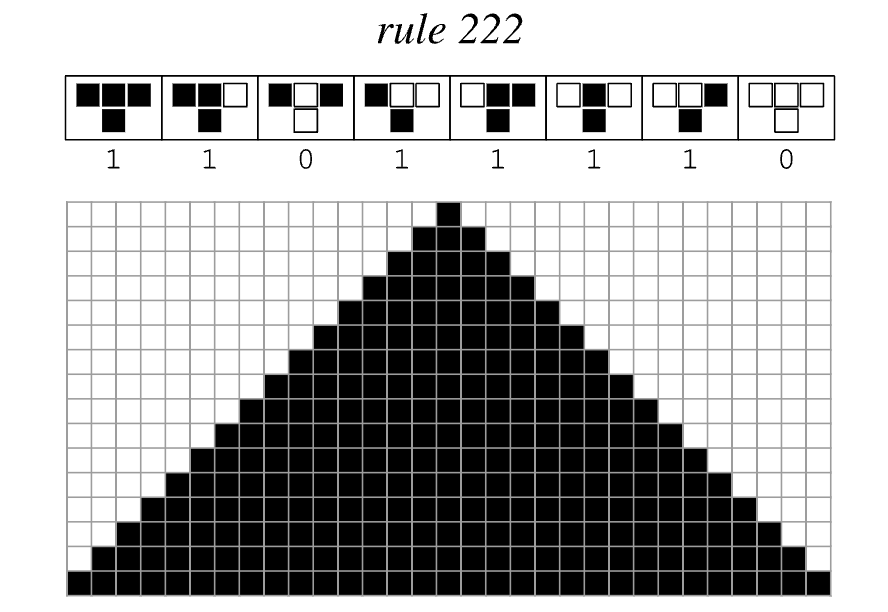

-
 First 24 Hours in Thailand
First 24 Hours in Thailand
From the last stop of the airport tram, two backpacks, and a motorbike ride that felt like coming home.
-
Goodbye Southeast Asia
Nica & me, Sunset Bar, Koh Tao — our last night, and the advice she left me with.
-
New Years Resolutions
On sunsets, quitting vaping, and everything 2024 taught me about follow-through.
-

A Summer Debate on DestinyFree will, determinism, cellular automata, and the universe.
-
 Across the World and Back to Myself
Across the World and Back to Myself
Why asking "Am I happy?" became my compass in a year of self-discovery and big moves.
-
 Kurzweil's Six Epochs
Kurzweil's Six Epochs
A book review of Ray Kurzweil's The Singularity is Near and an overview of his six epochs.
-
 The New On Degenerative Diseases
The New On Degenerative Diseases
New developments in the understanding of neurodegenerative diseases, out of a UC Berkeley lab.
-
Dualism & Leibniz's Law
Entering into the phenomena of the mind-body connection debate.
-
 Life Updates!
Life Updates!
This past May, I graduated from UC Berkeley with a B.A. in Cognitive Science.
-
Hey! So Glad You're Here.
Why this blog exists, and what I learned unraveling the "tell me about yourself" question.